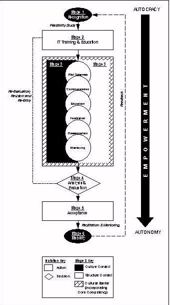
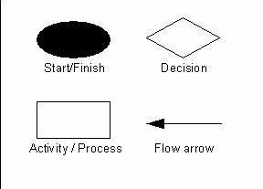

Information Research, Vol. 4 No. 4, July 1999


Information Research, Vol. 4 No. 4, July 1999 | ||||
|
|
|||
Information Technology ('IT') has made a prolific impact, both in sociological and commercial terms. In the business world, the pursuit of new technology and working practices has often been at the expense of equal regard for the correct methods to manage the new technology. Contemporary IT techniques and methods include Management Information Systems ('MIS') which are normally implemented on a company-wide basis. However, MIS implementation has major cultural and organisational implications which will form the main focus of this paper. A conceptual model is proposed for successful MIS implementation which combines established research findings with ethnographically-informed data from a small, UK-based, business.
Definitions of culture are widespread and the difficulty in refining down to a single definition is exacerbated when it is considered that over 150 different definitions of the term "culture" have been formed [Kroeber & Kluckhohn, 1952]. For the purposes of this paper, the most cited definition of Culture as being the collective programming of the human mind which distinguishes members of one group from another [Hofstede, 1994a] will be used.
Extending the notion of culture into an organisation leads us to the definition of Organisational Culture which is the pattern of basic assumptions [Schein, 1990] used by individuals and groups to deal with an organisation's personality and feel. It is this same organisational culture which defines behaviour, motivates its individuals and affects the way in which the organisation processes information.
Researchers are generally agreed [Schultheis & Sumner, 1995; Sherman, 1985; Lucey, 1991] that organisational IT implementations occur for the following reasons (either individually or in combination): to improve efficiency, to improve effectiveness and to bring about transformation. A Management Information System can be defined as an integrated structure of databases and information embracing all organisation levels of a company [Lucey, 1991] which facilitates the optimum transfer of information to meet corporate objectives.
Researchers and authors have analogised organisations to an iceberg [Gibson et al, 1994; Gummesson, 1988] which shows only 10-15 percent of its total mass above the surface water [Gummesson, 1988] and is thus a suitable analogy to show the visible and non-visible facets to an organisation's culture. This analogy demonstrates the importance of deeper research in an organisation in order to gain access to the submerged 85-90 percent of the organisation's value and belief system.
Several factors can combine to form the basis of an organisation's culture, examples of which include: reports, letters, memos, emails, health & safety regulations and rulebooks. Some examples of protocols of a more-verbalised nature include forms of addresses, repeated stories/myths, "in"-jokes, rumours and speculation. Factors such as dressing styles/requirements and programmed organisational career paths can also contribute to an organisation's culture.
Although several established culture-change models exist (Hofstede 1994b], Lundberg [1985], Schein [1985, 1990], Dyer [1985], Gagliardi [1986] and Lewin [1952]), they are often more suitable for some organisations and less suitable for others. A review of the inherent issues involved in these established frameworks demonstrates the different cultural basis that established researchers and practitioners have used. The suitability of these models is generally for circumstances and situations of relevance at the time of their inception. The ideal cultural change model may well be a skilful blend of the most pertinent tools and techniques from the existing range of cultural and organisational change models.
The proliferation of IT during the 1980s [Sherman, 1985] impacted strongly on the perceptions of business managers. Researchers and Authors [Hirschheim, 1985; Sherman, 1985; Noori, 1988] have confirmed that, throughout the 1980s, technically-oriented staff employed by organisations recognised the severe gap in their organisational recommendations and the perceptions and expectations of non-technical managers.
The cultural gulf between management and IT staff [Ward & Peppard, 1995] encompasses the notion of sub-cultures and the traditional IT function has been often regarded as just another department within the evolving organisation. In reality, the culture of the IT department is often specifically geared towards achieving strategic growth through the use of contemporary IT techniques. Conversely, management, privy to (and perhaps governed by) financial constraints, are often content to expand on existing legacy systems which are ill-suited to achieving contemporary corporate goals.
It is issues such as these which necessitate a new Organisational Culture-IT framework, a framework which, although having its foundations in established cultural models, embodies recent and novel findings. The coterminous constraints of established theoretical models can be fused with new endemic elements to produce an exploratory and explanatory conceptualisation of a contemporary Small Business. In this paper, new data for the new framework contains significant input and findings from an extended ethnographic case study.
The ethnographic study examines the organisational culture at Thermo-X, a pseudonym for a Derbyshire-based owner-managed company. The company employs about 30 people on two sites in the design, manufacture and calibration of thermocouples, resistance thermometers and special purpose instruments. The Managing Director ('MD') is also the owner of the business and has substantively set up the operational procedures and established systems.
Thermo-X has been involved in a Teaching Company Scheme ('TCS') with Sheffield Hallam University for a three year period. The primary objectives of the Scheme were to improve manufacturing performance by the introduction of stock-control software, to introduce manufacturing resource planning (MRPII) and to improve existing operational procedures and control. A secondary objective, and an integral part of the primary aims, was the introduction and demonstration of contemporary IT methods and techniques.
Researchers ranging from Earl [1993] to Zmud [1984] agree that organisations attempt to change their culture in order to bring about a strategic change such as the introduction of a Management Information System. Confirmed by Brown [1995], established culture-change researchers have put forward several cultural change models with no framework in clear dominance.
Due to the numerous and varied definitions of culture, it may be apparent that attempting to change organisational culture according to one researcher's model may be significantly easier than using another researcher's framework. The very diversity of the culture-change models contributes to illustrate their respective weaknesses in addition to their intended strengths. Given that the various models have provided great insights into the culture change process, the highlighted concerns should be explored further.
A literature review of the culture-change frameworks has shown that different researchers vary in their preference of a basis for culture. None of these models or frameworks is necessarily wrong as each possesses its own advantages and disadvantages and the ideal cultural change model may well be a skilful blend of the most pertinent tools and techniques from this range. The ethnographically-informed data has confirmed that organisational culture change and a successful change programme possesses several common precepts: the existence of an initial crisis, the importance of a strong leadership, emphasising the importance of success and relaying news of the success and the importance of supporting change.
Several exercises were carried out in an effort to change the organisational culture in order to successfully accommodate the impending IT implementation. The Model incorporates the various culture-directed activities carried out at Thermo-X in order to stylise the culture in preparation for the impending IT overhaul.
Specific issues highlighted from the ethnographic study will now be discussed, including which techniques are of particular relevance, whether certain facets are be actioned in a particular order and whether elements are etic or emic in their applicability to a UK-based SME. The issues highlighted suggest that the ideal solution cannot be purist or dogmatic in its nature or outlook. The factors involved are not just characteristic to the disciplines of Management and Information Technology but are also induced from and informed by areas as diverse as Psychology, Politics and Sociology. Recognising that the new approach encroaches on seemingly dissimilar, non-homogenous, subjects will be an integral part to its acceptance and subsequent usefulness.
The MISCO Model was "walked though" with key personnel at several external organisations in order to test its suitability to the organisation. Validation revolved around key questions; the feedback of participants was both constuctive and useful. It was the purpose of these organisational experiences to support or contradict the constructs put forward in the MISCO Conceptual Model. Analysis of the interviews at the four SMEs revealed a commonality of interests and experience in a number of different areas, the most important of which will now be discussed.
All of the interviewed SMEs, including Thermo-X, carried out an evolutionary IT route, expanding on legacy systems in order to further company ambitions. Prior to the implementation of the new MIS, no formalised or recognised IT Implementation Plan had been used. Hence, duplication of several data processes and procedures was commonplace (for example, involving Accounts and Order Processing).
For all of the interviewed companies, moving to the new MIS has required the replacement of obsolete equipment and the subsequent procurement of new hardware, software and network infrastructure. Management involvement in the definition of new requirements, both on an historical basis and for the new MIS, has allowed experienced users to participate in the Requirements Definition phase of implementation.
Reliance on legacy systems has often been indicative of the organisation's culture (a reluctance to replace ineffective and outdated information systems). Disparate development and installation of stand-alone software packages in some departments has not facilitated central co-ordination of IT activities. This individual technical approach is mirrored by the existence of departmental "sub-cultures" in all of the visited SMEs (for example, people in a Service department carrying out procedures in a vastly different manner to people in a Manufacturing department).
Provision of proper IT Training has often had minimalist presence at the SMEs. Interviews have revealed that even the legacy system were not used to their full potential. Recognition of this, and emphasising its importance for the new MIS, is a key element of the MISCO framework. Transfer of data has often been on a non-standard basis with no reference to Best Practice or recognised IT procedures. A simple example would be data transfer by disk rather than via a secure network connection. The risks to data integrity, reliability and exposure to viruses are all too apparent.
The MISCO (Management Information System Culture-Organisation) Model comprises a set of activities and techniques to prepare SME organisations for MIS implementation. MISCO has six main stages. Stage 1 is recognition, followed by Stage 2 consisting of IT Training and Education. Stage 3 consists of the following activities: pilot schemes, communication, education, facilitation, dissemination and mentoring. The analysis and evaluation stage (Stage 4) incorporates a feedback loop. Stage 5 breaks down into an acceptance activity leading to the final stage (Stage 6), stability. This final stage also incorporates a feedback loop back to Stage 2. A "cause-effect" relationship exists between activities, where the outputs of an activity become inputs for the next MISCO activity.
MISCO comprises a group process for UK-based SMEs and, in this context, can be regarded as both a methodology and a process. MISCO can be broken down into six main stages, some of which can be broken down into several component activities. All stages consist of several multifarious, yet interrelated, activities.
Identification of the activities within these six stages, in addition to guidelines, tools and techniques to be used, is important in the interests of correct understanding and application. Identifying the personnel involved in all stages will also be of paramount importance. The activities involved in each of the stages can be summarised as follows:
Detailed descriptions of the above activities are provided in the section titled "MISCO Stages and Activities", together with a discussion of the personnel involved. A schematic illustrating the MISCO constructs is provided in Figure 1.
From Figure 1, it would appear that the MISCO model is a relatively simple process. Stages and Activities are linked in an "input-output" relationship. The relationships can be described as "input-output" as they are carried out in sequence. The relationships exist as inputs and outputs of their respective predecessors (ie. an output from one process or stage becomes an input for another). These same relationships may or may not be carried out by the same group of people.
The schematic, Figure 1, aims to conceptualise the change process. The aims and objectives of the schematic are to provide a clear and concise view of the MISCO change process. Feedback loops are shown where applicable. For example, whilst performing out the activities in Stage 3, SME members (after evaluation of progress made) may decide to return to Stage 2. Returning to Stage 2 at this point indicates ineffective or insufficient progress being made during Stage 3 (Pilot Scheme, Communication, Education, Facilitation, Dissemination and Mentoring).
Figure 1: MISCO constructs

Emulating established methodologies, such as PRINCE, it is recommended that the MISCO change process be split into two groups: the MISCO Support Team (consisting of at least one member, the facilitator) and the MISCO Management Committee. The MISCO Management Committee is a group of senior personnel (at the company and perhaps from external support organisations) who co-ordinate, support and oversee implementation and progression of the MISCO framework.
The MISCO Management Committee is a body set up to control the development of the MISCO change process. The Committee has representation from various interested parties (such as company management and academic support). Typically, the Committee might have senior user representatives in addition to personnel from other departments (or departmental functions) such as accounts, purchase, HRM, sales and so on. The Committee should have the authority to make executive decisions on the MISCO project.
The MISCO Support Team is a group of personnel whose main function is to provide members of the SME with technical and organisational support and advice. The main function of the MISCO Support Team is to organise, document and carry out the inherent constructs of the MISCO framework.
As discussed in Section 7.2, the MISCO change process should be carried out by at least two people, one of whom assumes the role of the implementor, the other should be a representative of top-line management.
The MISCO Support Team should co-ordinate the activities of the group and should interact with the MISCO Management Committee. Key responsibilities of the MISCO Support Team (or implementor) include:
In the MISCO Support Team, the facilitator is responsible for summarising performance information about the change process and for highlighting opportunities for improvement. These responsibilities demand of the facilitator a thorough understanding of MISCO's criteria, guidelines, tools and techniques. However, the facilitator should not solely decide on the adoption of specific changes. This is a prerequisite of the MISCO model as changes and future directions should be obtained by group consensus.
The other members of the group should provide input, with executive decisions resting with the facilitator. In smaller organisations, it may be practicable for one person to play two or three roles, for example group leader, facilitator, and to provide inputs as a "group member". There is a danger at this point that objectivity will be lost.
Apart from the guidelines listed in the previous section, there are a number of additional guidelines which are relevant to the MISCO change process on a macro level. Such points are not necessarily associated with a particular stage or activity but are nevertheless an integral part of the framework:
The stages which the MISCO Support Team executes should be properly documented. The facilitator should possess full responsibility for documenting these processes as this historical data may prove to be of significance either in later stages or activities of the MISCO change process or in subsequent change programmes.
Each meeting should, if possible, link to the previous meeting. An introduction to the meeting should link the main themes of the previous meeting (or meetings) with the aims and objectives of the current meeting. Each meeting should end with a summary of the main points which have been discussed. This summary can become the basis of the introduction for the next meeting. Such an approach can be justified in the interests of group cohesion and focus.
Group "cohesiveness" (described earlier) is an integral part of the MISCO model. The facilitator should not use autocratic management methods to "enforce" such cohesion as this approach is contrary to that desired in MISCO.
The feedback loops shown in the MISCO model should be carried out in good time. Unduly deferring action (or re-action) endangers cohesiveness and the overall impetus of the project. Conversely, not waiting for a sufficient amount of time may infer to the organisation a hurried or superficial implementation approach. Future research may indicate a desired time for implementation (or re-implementation).
The MISCO framework has been conceptualised using flow chart notation, the chief aim of which was to understand the relationship between the stages and activities. By doing so, a clear understanding of the MISCO change-process is achieved. The MISCO flow chart represents processes using ANSI standard flow chart symbols. MISCO uses only four symbols: the Start/Finish ellipse, the Activity rectangle, the Decision diamond and the Flow arrows, depicted in Figure 2.
Figure 2: MISCO Flowchart Notation

The MISCO schematic is accompanied by a full narrative of the depicted stages and activities. Without this, information and understanding may be lost. Such information would not be appropriate for inclusion on a schematic but is invaluable for facilitating understanding of the model.
MISCO involves a number of different stages and activities. The following section discusses MISCO tools, techniques and guidelines appropriate for each stage and activity. Stages and activities will be listed in desired order of execution.
In this first key activity, the organisation recognises that problems exist and these are identified. As discussed earlier, the facilitator should lead, motivate and co-ordinate the activities of the MISCO Support Team. This approach takes responsibility of problem identification away from the MISCO Management Committee. However, the Committee should be encouraged to participate fully in these early stages, as previous knowledge of the organisation's history and previous organisational or industry experience of Committee members may be extensive and relevant to these initial discussions. Additionally, including the views of the MISCO Management Committee broadens MISCO's impact as it does not then rely on the initiative and experience of a limited number of managers.
This initial stage identifies previous and current organisational problems. Given that most business processes can almost always be improved, identification in this first instance refers to both external and internal pressures. Work by Lundberg [1985] has confirmed that many UK-based SMEs are likely to face a range of varied external pressures. These pressures, relevant to MIS implementation, may include such tasks as the replacement of legacy systems or the need to meet Y2K (Year 2000) compatibility, an important issue at the time of writing. These pressures may result in the organisation changing the way its internal processes and procedures are carried out. Established culture-change authors [Lundberg, 1985; Schein, 1990; Dyer, 1985; Gagliardi, 1986; Lewin, 1952] agree that these changes almost always face resistance from staff within the organisation.
The experiences from Thermo-X and from the external organisations show that, in addition to identification of external pressures, identification of sources of discontent within the company should also be encouraged. It is recognised that these additional problems can enhance the level of motivation among organisation members. This also allows group members to have a clear view of what is to be achieved using MISCO.
A list of identified pressures and problems should be internally checked (by the MISCO Support Team) and then submitted to the MISCO Management Committee for additional verification and validation. The final version of the list should form the basis of the MISCO Support Team and the facilitator should assemble the Team by selecting and inviting prospective group members.
The list of problems should have a focus. This is because listing problems which are unrelated or which have an unnecessarily broad outlook can lead to the identification of several different, unrelated, avenues for change. The result of this could be reduce the cohesiveness of the Team and Committee. The approach to problem identification should attempt to emulate that of "brainstorming". All participant should be encouraged to suggest problems, no matter how minute they may appear. No one person's ideas should be ignored or belittled. Once a list (labelled as the "Feasibility Study" on the schematic) has been drawn up, work can begin on prioritising this list.
Internal and external pressures may cause the organisation to change the way its processes and procedures are carried out. Various authors [Lundberg, 1985; Schein, 1990; Dyer, 1985; Gagliardi, 1986; Lewin, 1952] agree that these changes may face resistance from staff within the organisation. Resistance to impending change may not always be of human origin as it may be the case that the existing physical infrastructure or internal working procedures within the organisation may be incapable of accommodating proposed changes.
In this first stage, the MISCO Support Team and the MISCO Management Committee should garner opinions and views from all pertinent organisational personnel. It should be appreciated that this stage incorporates a feasibility study from which is generated a list of recognised issues. These issues should be prioritised, similar to the role of a Risk Register in project management. The Qualitative and quantitative data should be used in order to research and identify internal and external pressures.
The feasibility study from Stage 1 is used as a basis for identifying key areas of the organisation where attitude, belief and value change is necessary to fully implement the system. The feasibility study facilitates identification of the level and extent of IT training and education required. This training and education will then be used to penetrate the organisation's "cultural barrier" (discussed later). The research has shown that the use of an internal change agent greatly enhances acceptance of the change programme. Stage 2 can be described as an IT preparatory stage which will be built upon with the constructs within Stage 3.
The MISCO Support Team and the MISCO Management Committee should, with reference to the feasibility study, clarify which organisational member will participate in the proposed change process. If these members require assistance and support from higher management levels (or external organisations, eg, for training), this should be clearly stated.
This stage consists of six steps which, if possible, should be carried out simultaneously. Note that the schematic does not suggest that these activities are executed sequentially. The overlap of the six "discs" of change are present to suggest sequential activity. The research has shown that the SME culture and organisation change-process is non-linear, hence the suggestion for simultaneous execution of the six steps. The prospect of change can be daunting for many SME employees. Questions may arise about whether the impending change will adversely affect an employee's established working routines or whether the change will significantly reduce that employee's role.
Employee emotions and feelings such as fear, stress and a tendency to be objectionable or argumentative are some of the more common traits which must be overcome. The change agent (or team) must be aware that the key to overcoming these apprehensions is support. Employees may be sceptical regarding the impending change programme. This scepticism can manifest itself in the form of questioning the merits of change. Being openly opposed to the merits of the change programme, employees may cite previous (failed) attempts at IS introduction. Employees may also feel it appropriate to talk with other employees, rather than approach management or the change agent with any concerns, often exacerbating their fears in the process.
Core competency, or the aptitude and proficiency of organisational members, can be used to measure the acceptance or rejection of activities or behaviour of an organisational member. Competence can therefore indicate the cultural bearing of the organisation. The schematic depicts a distinction between the cultural and structural/organisational contexts. Six "discs" of cultural change straddle the dividing line between the cultural and organisational contexts. The change steps (IT pilot schemes, communication, education, facilitation, mentoring and dissemination) embrace and impact on both cultural and structural change. These six steps will now be discussed.
The research has shown that the use of IT pilot schemes greatly enhances the chances of user participation for the full MIS implementation. Pilot schemes allow the change agent to perform an "implementation test" with organisational members. The change agent is provided with the opportunity to appraise people's attitudes and aptitudes regarding IT and the change programme in general. Extending existing Information Systems, or introducing small projects, in this manner acclimates those users who may be technophobic. Additionally, this step can identify functions required by the MIS. The change agent should be prepared to execute a "hands-on" approach during implementation of pilot schemes which demonstrates a commitment to IT and IS implementations.
The change agent should be aware that communication with all employees affected by the incoming MIS is of vital importance. Conversations should be pitched at an appropriate level, using non-technical terminology with technophobic personnel. Putting employees at ease and assuring them that comments would not be reported to management greatly encourages proactive and genuine debate. Constant encouragement such as this can elicit valuable opinions on the change programme and the MIS.
To expedite progress of the project, IT training (first encountered in Stage 2) should be continued. Imparting technical knowledge and skills allows users to participate fully, particularly during staged implementations. If the necessary technical abilities or training abilities are unavailable in-house, the organisation (via the MISCO Support Team or the MISCO Management Committee) should arrange for an external agent or organisation to convey the merits of the new system.
The research demonstrates the need for an internal change agent or change management team. The intrinsic nature of a SME means that external consultants, be they associated with change programmes or not, can be treated with suspicion. Employees may question the validity of external assistance, arguing that the organisation already possesses sufficient expertise. The research shows that constant reassurance is an integral part of the change process. The internal change agent (or facilitator) should constantly monitor, control and evaluate progress of the MIS implementation.
Disseminating the benefits of MIS and the success of IT pilot schemes throughout the organisation is of vital importance. The success and benefits of these schemes and implementations will assist sceptical employees. Pertinent decisions, outcomes and proceedings from meetings involving the MISCO Support Team and the MISCO Management Committee should be promulgated throughout the organisation. This may be appropriate through the use of team or department meetings, memos or emails.
The change agent should be prepared to guide and monitor employees regarding their perceptions or resistance towards technology and the MIS. One-to-one discussions can alleviate such fears and change agents should, via organisational dissemination, ensure that employees are fully aware that mentoring opportunities are available. Some employees may be reluctant to voice their fears or concerns in front of their peers or department heads. It is vital that all employees give full support to the MIS implementation and it is therefore important that all concerns are alleviated.
Concurrent tasks and activities. The MISCO model, as part of its fundamental precepts, emphasises the need to execute tasks and activities concurrently. Sequential tasks increase the overall time taken to complete activities. This decrease in productivity can also lead to decreased motivation, again impacting on productivity. The MISCO model depicts the need to carry out the "six discs" (IT pilot schemes, communication, education, facilitation, dissemination and mentoring) of cultural change concurrently. It is reiterated that the schematic does not suggest that activities are to be executed sequentially.
Introduce improved communication methods. Information exchange can be carried out either synchronously (interacting at the same time, for example a telephone conversation) or asynchronously (interacting at different times, for example exchange of emails). Experiences from Thermo-X and discussions with the external organisations suggest that asynchronous communication can be more effective that synchronous communication. Synchronous communication often means an inefficient use of time. Asynchronous communication can be improved by the use of group or departmental notice-boards, "active" trays and the exchange of email. Use of these methods allow users to think and debate key issues before responding, rather than giving an ill-informed "knee-jerk" response to questions.
Central data store. As discussed, outcomes and issues from MISCO team meetings should be properly documented and recorded. Data stores can either be paper or computer-based. It is suggested that one of these two methods is used, but not both. Use of more than one data store for the same type of data can cause inconsistency problems. Such problems can have an impact on productivity and team motivation. The research experience demonstrates that unclear, out-dated data leads to a large number of inconsistency problems. These problems often lead to data integrity errors, causing yet more problems for the organisation.
Reduction of information flows. Organisational efficiency should not be at the expense of organisational effectiveness. Information flows within MISCO should be relevant and concise. The presence of too much information can lead to confusion, stress and incorrect dissemination of activities and information. The role of department managers within the MISCO model has been well defined. Excessive information dissemination impacts on the role of department managers who then also assume a "messenger"-type role, providing (incorrect and unnecessary) information to department members. The use of electronic databases and effective filtering techniques can assist the elimination of excessive data and information.
Reducing control. The MISCO model encourages employee empowerment as the research has shown that this increases productivity and motivation for the MIS. Excessive control can severely reduce motivation and enthusiasm for the change programme. Without empowerment, responsibility for checking work and reports is then borne by departmental and top-line management, increasing workload. Additionally, employees become aware that these reports are to be checked by their managers which can lead to a slovenly approach to their work.
Limited number of contact points. The MISCO model encourages interaction between team members and departments. This interaction will involve contact between the change agents, employees, department managers and top-line management. The research has shown that contact points can generate delays and inconsistencies. Where excessive, this can lead to organisational dissatisfaction and a reduction in motivation.
Simplifying complex tasks and activities. Intricate and complex tasks, activities and processes should, where possible, be simplified into simpler ones. Simplification fosters motivation, increases clarity and reduces workload for employees. Confusion and mistakes are reduced when clarity and full understanding is achieved. Decomposition of tasks and activities assists management in the monitoring, control, co-ordination and evaluation of these processes. Simplification of tasks can enable the change agent to work on various processes simultaneously.
Having carried out the culture and organisation change steps in Stage 3, the model attempts to move to the next stage. Before doing so however, the effects of the six steps are appraised and evaluated. If it is felt that the effects of change have not been sufficient or if instigated changes have not been established, this is indicative of an ineffective change program. Deficiencies of the organisations or of the culture-organisation change process should be noted and the facilitator, following the feedback line, should return to Stage 2 (IT Training and Education).
Returning to Stage 2 should not be regarded as a major organisational (or a personal failing on part of the facilitator). Changing organisational culture and employee attitudes is a very difficult process. If the Analysis and Evaluation phase does confirm inadequacies of the change programme, these should be regarded with a positive attitude as the opportunity is then present to resolve these issues before they can be exacerbated.
If the Analysis and Evaluation phase does not identify any inadequacies, the model moves to Stage 4 (Acceptance). This stage is reached when cultural and structural change methods have been successfully deployed within the organisation.
The facilitator should be aware that, in this stage, acceptance is a state reached when, and only when, analysis and evaluation has been properly - and honestly - executed.
Having reached the Acceptance stage, re-entering the cultural barrier if necessary to resolve any difficulties, the MISCO framework takes an evolutionary route to the Stability stage. The route to this stage should be supported by continued mentoring and facilitation, elements already displayed and conveyed by the change manager. Although nearing the final stages, the transition between the Acceptance and Stability stages should not be executed complacently. Only when full Stability has been achieved should the change-manager be sure that his work is complete.
The facilitator should be aware that the stability stage may, with time, feedback to the recognition phase (Stage 1). Documentation of key stage activities should be continued at this point. It is recommended that a handover report be generated so that another change agent can be made aware of previous change-management issues within the organisation.
Re-Evaluation, Revision and Re-Entry feedback
Having achieved the objective of attaining a new culture, (a culture which has successfully accommodated a MIS and which has made appropriate changes to organisational structure), the organisation may, given time and experience, return to our original starting position. This position was one where the management of the organisation have recognised that a culture and organisation change may be necessary.
The Empowerment Arrow: Organisational and Structural Change
The entire MISCO involves a desired move from an autocratic organisational structure to a more autonomous structure. The research confirms that this should be carrying out by empowering employees to take increased responsibility and a more proactive role in their everyday tasks. The presence of the "empowerment" arrow seemingly to a point external from the main model should not nullify its importance to the MISCO framework.
The research originally conceptualised a shift from the organisational "temple" model to a "matrix" structure. The more realistic depiction of a move from an autocratic arrangement to a more autonomous structure, without the regimented labelling of "temple" and "matrix", reduces pressure on the MISCO Support Team and the MISCO Management Committee.
Views of McAuley [1994] and Bate [1990] are reflected in the framework. Competency, the aptitude and proficiency of organisational members, can be used to measure the acceptance or rejection of activities or behaviour of an organisational member. Competence can therefore indicate the cultural bearing of the organisation. The importance of the link between organisational culture and core competency is brought sharply into focus by McAuley's [1994] comment that if certain competent organisational members and a core cultural component of are at odds, the same behavior that was once considered "competent" can now be incompetent. As a result of this association, the inclusion of core competency has an important role to play in the new MISCO Model.
Culture change is often necessary when implementing far-reaching Information Technology programmes into SMEs. The anticpated benefits of IT implementations must be offset with the operational-procedure changes necessary to both initially receive and successfully accommodate the new technology. This paper has established the cultural and organisational aspects of implementing a Management Information System into a UK-based SME, has formulated an innovative implementation framework which such a firm could use to implement a MIS and has analysed and considered the role and importance of management during the change process.
Organisational and cultural changes can be a key inhibitor or facilitator to successful implementation. However, attempting to change an organisation's culture is far from easy. The change process is riddled with a variety of challenging barriers which must be overcome in order to change the culture. Recognising and acknowledging the existence and complexity of these difficulties is central to the change process as, without this recognition, cultural and structural change will meet with failure, as will the anticipated benefits of the IT implementation.
The new Model has been put forward to present novel variables regarding Organisational and Cultural attitudes when implementing Management Information Systems. The Model requires empirical verification and validation upon which further work can be based in order to expand on the ideological concepts presented. Triangulation techniques [Taylor & Bogdan, 1984; Gummesson, 1988; Stake, 1995] can continue and be extended. Quantitative data techniques, perhaps in the form of detailed questionnaires, can be used to further validate the research findings.
The focus of this research has been on UK-based SMEs operating in a manufacturing environment. Opportunities may exist to expand on this by applying and refining the MISCO Model in other industries, such as service and retail, in order to form either a generic framework or specific model for these industries. The complexity of culture has been discussed within this paper. The applicability and validity of cultural identity and semantics results in varying definitions of culture. It is suggested that applying the MISCO Model to companies outside the UK (perhaps in Europe and the United States) would require a major re-evaluation of the conceptual constructs. Immersion in and experience from these different cultures may well result in a different MISCO Model.
It is now up to academics and IT practitioners to use the proposed MISCO Model, either in its existing form or after modification, in order to exploit its usefulness to UK-based SMEs.
How to cite this paper:
Bali, R., Cockerham, G. & Bloor, C. (1999) "MISCO: a conceptual model for MIS implementation in SMEs." Information Research, 4(4) Available at: http://informationr.net/ir/4-4/paper61.html
© the author, 1999. Last updated: 11th May 1999
Contents |
Home |